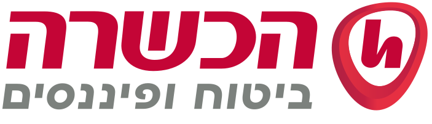

מה זו פוליסת חיסכון
פוליסת חיסכון היא מוצר חיסכון שמנהלת חברת ביטוח. הכסף שמפקידים מושקע במסלול שאתם בוחרים, מתוך רשימת מסלולים שקובעת רשות שוק ההון, ביטוח וחיסכון. החברה מנהלת אותו יחד עם כספי חוסכים אחרים באותו מסלול, לפי מדיניות ההשקעה שלו. הפוליסה כפופה לחוק הפיקוח על הביטוח ולחוק חוזה הביטוח.
למרות השם, ברוב פוליסות החיסכון אין רכיב ביטוחי. אפשר להוסיף כיסוי כמו ביטוח חיים, אבל זה לא תנאי, ורק בחלק קטן מהפוליסות יש כזה.
בדרך כלל אפשר להפקיד סכום חד־פעמי, הפקדה חודשית או את שתיהן, ולהוסיף כסף גם בהמשך.
פוליסת חיסכון במבט אחד
| מי מנהל את הכסף | חברת ביטוח, בפיקוח רשות שוק ההון, ביטוח וחיסכון |
|---|---|
| תקרת הפקדה | אין |
| נזילות | אפשר למשוך בכל עת, לפי תנאי הפוליסה |
| דמי ניהול | קבועים בפוליסה, ונקבעים בהתאם לסכום המופקד |
| מס על הרווח | רק במשיכה, עד 25% מהרווח הריאלי |
| מעבר בין מסלולים באותה פוליסה | לא אירוע מס |
| מעבר לחברת ביטוח אחרת | רק דרך משיכה, ולכן אירוע מס. בהכשרה אפשר להחליף בתוך הפוליסה גם את גוף ההשקעות, בלי אירוע מס |
נכון לנובמבר 2026. המקורות מפורטים בסוף העמוד.
למי זה מתאים
פוליסת חיסכון נפוצה בקרב מי שיש לו כסף פנוי שהוא רוצה להשקיע לטווח בינוני או ארוך, בלי לוותר על הגישה אליו. כמה מצבים שבהם היא עולה לדיון:
- כסף שיושב בעו"ש או בפיקדון, בלי שימוש מתוכנן בשנים הקרובות.
- מי שכבר הפקיד לקופת גמל להשקעה עד התקרה השנתית. בפוליסת חיסכון אין תקרת הפקדה.
- חיסכון למטרה רחוקה, כמו עזרה לילדים או רכישה גדולה.
- מי שרוצה אפשרות לשנות את מסלול ההשקעה בלי לשלם מס בכל שינוי.
היא פחות מתאימה לכסף שתצטרכו בקרוב ושאתם לא רוצים שיהיה חשוף לתנודות. בכל מסלול שיש בו מניות או אג"ח, השווי יכול לרדת, ולפעמים לתקופה ארוכה. ההתאמה האישית תלויה במטרה, בטווח, בחסכונות האחרים שלכם ובסיכון שנוח לכם איתו.
נזילות
הכסף בפוליסת חיסכון נזיל: אפשר למשוך את כולו או חלק ממנו בכל עת. ברוב החברות אפשר לבצע פעולות באופן דיגיטלי, כולל משיכה, וההעברה לחשבון הבנק מתבצעת בדרך כלל תוך שבוע עד שבועיים.
חברת הביטוח רשאית גם לתת הלוואה כנגד הכסף שנצבר בפוליסה. כך אפשר לקבל כסף בלי למשוך את החיסכון, אבל להלוואה יש ריבית ותנאים משלה.
נזילות היא לא הבטחה לשווי. מי שמושך אחרי ירידה בשווקים מקבל את השווי של אותו יום.
אנונה: משיכה חודשית קבועה
במקום למשוך סכום אחד, אפשר לבקש מחברת הביטוח להעביר לחשבון הבנק סכום קבוע בכל חודש. זו אנונה. היתרה בפוליסה ממשיכה להיות מושקעת במסלול שבחרתם, והתשלומים נמשכים לתקופה שבחרתם או עד שהכסף בפוליסה נגמר. בדרך כלל אפשר לשנות את הסכום או לעצור את התשלומים בהמשך.
לאוכלוסייה המבוגרת זה יכול להיות שימושי מאוד: מי שפרש וצריך הכנסה קבועה בנוסף לקצבה מקבל "משכורת" חודשית מהחיסכון, בלי לזכור למשוך כל פעם מחדש ובלי להוציא את כל הכסף מההשקעה בבת אחת. מס משלמים רק על חלק הרווח שבכל תשלום, ומגיל 60 שיעור המס עשוי להיות מופחת, כפי שמוסבר בהמשך.
חשוב לזכור שאנונה אינה קצבה לכל החיים. התשלום ממשיך כל עוד יש כסף בפוליסה, ובתקופה של ירידות בשווקים הכסף עלול להיגמר מוקדם מהמתוכנן. לכן כדאי לקבוע את הסכום החודשי בזהירות ולבדוק אותו מדי פעם.
מוטבים
בפוליסת חיסכון ניתן לרשום מוטבים, שיקבלו את הכסף אם המבוטח נפטר.
חשוב לדעת: הכסף שמגיע למוטבים בפוליסת חיסכון ובקופת גמל להשקעה אינו חלק מהעיזבון הרגיל. אם המנוח מילא בחברת הביטוח טופס מינוי מוטבים, הכספים יועברו ישירות אליהם, לפי החלקים היחסיים שקבע, גם אם בצוואה שלו נכתב משהו אחר. החריג הוא צוואה מאוחרת וספציפית ששינתה את המוטבים וניתן לה תוקף משפטי. לכן כדאי לבדוק מדי פעם שהמוטבים הרשומים עדיין נכונים.
מסלולי השקעה
כל חברת ביטוח מציעה מספר מוגבל של מסלולים, בפועל כעשרה. הם נבדלים בעיקר במה שהם מחזיקים: מסלול כללי שמשלב מניות, אג"ח ונכסים נוספים, מסלול מניות, מסלולים של אג"ח, ומסלולים שעוקבים אחרי מדד. אפשר לבחור מסלול אחד או לחלק את הכסף בין כמה מסלולים, ומדיניות ההשקעה של כל מסלול מתפרסמת.
בדף הבית יש טבלה שמדרגת את המסלול הכללי ואת מסלול המניות בפוליסות החיסכון לפי התשואה בשנה, בשלוש ובשבע השנים האחרונות, מנתוני משרד האוצר. התשואות שם לפני דמי ניהול, ותשואת עבר אינה מבטיחה תשואה בעתיד.
לטבלת התשואות של פוליסות החיסכון
דמי ניהול
בפוליסת חיסכון משלמים דמי ניהול שנתיים מהצבירה, כלומר מכל הכסף שנצבר בה. דמי הניהול קבועים בפוליסה, ונקבעים בהתאם לסכום המופקד. בקופת גמל להשקעה לרוב התקרה תהיה נמוכה יותר.
לפי דו"ח של משרד האוצר מפברואר 2025, דמי הניהול הממוצעים היו כ־0.74% בפוליסות חיסכון וכ־0.64% בקופות גמל להשקעה.
מעבר לדמי הניהול יכולות להיות גם הוצאות ישירות של ניהול ההשקעות, שמנוכות מהתשואה.
מס על הרווחים
כל עוד הכסף נשאר בפוליסה, לא משלמים מס על הרווח. המס משולם רק במשיכה: חברת הביטוח מנכה אותו במקור, בשיעור של עד 25% מהרווח הריאלי, כלומר מהרווח שמעל עליית המדד. על ההפקדה עצמה אין הטבת מס.
מעבר בין מסלולים, בלי אירוע מס. העברת כסף ממסלול אחד לאחר באותה פוליסה, למשל ממסלול מניות למסלול אג"ח, לא נחשבת מכירה, ולא משלמים עליה מס באותו רגע. המס נדחה עד המשיכה, והכסף שהיה הולך למס ממשיך להיות מושקע בינתיים. לעומת זאת, מי שמחזיק קרנות נאמנות או ניירות ערך בחשבון רגיל משלם מס על הרווח בכל מכירה, ולכן כל שינוי בהשקעה עולה לו מס מיידי.
מעבר לחברת ביטוח אחרת הוא סיפור אחר: היום אפשר לעשות אותו רק דרך משיכת הכסף, ולכן הוא אירוע מס. בקופת גמל להשקעה, לעומת זאת, אפשר לעבור גם בין חברות בלי אירוע מס.
יוצאת דופן היא הכשרה: בפוליסת החיסכון שלה אפשר לבחור מסלולים שמנהלים כמה גופי השקעות שונים, ולעבור ביניהם בתוך הפוליסה בלי אירוע מס. כך אפשר להחליף את מי שמנהל את הכסף בלי למשוך אותו.
מה עשוי להשתנות. ביולי 2026 פרסם צוות במשרד האוצר דו"ח מסכם שממליץ להשוות את המיסוי של פוליסות חיסכון, קופות גמל להשקעה וקרנות נאמנות. לפי ההמלצות, דחיית המס תחול עד סכום כולל של 200 אלף ₪ לחוסך. עד הסכום הזה אפשר יהיה לעבור גם בין חברות ביטוח בלי אירוע מס, ומשיכה כקצבה מגיל 60 תהיה פטורה ממס רווחי הון. מעל הסכום, כל מעבר בין מסלולים יהיה אירוע מס. אלה המלצות בלבד, והן ייכנסו לתוקף רק אם יעוגנו בחקיקה. אם הכללים ישתנו, העמוד יעודכן.
הטבות מס בגיל מבוגר
מגיל 60: שיעור מס מופחת. מי שמלאו לו 60, והכנסתו החייבת בשנה, מעבודה ושלא מעבודה, לא עלתה על 228,000 ₪, עשוי לשלם על הרווחים מס נמוך מ־25%. בשנת 2026 השיעור הוא 10% על הכנסה של עד 84,120 ₪ בשנה, 14% על הכנסה של 84,121 עד 120,720 ₪, ו־20% על הכנסה של 120,721 עד 228,000 ₪. יש גופים שמנכים מראש את המס המופחת, ויש שמנכים את המס המלא ומחזירים את ההפרש. אם ההפרש לא הוחזר, אפשר לבקש החזר מס בתום השנה.
סעיף 125ד לפקודת מס הכנסה. זו הטבה ותיקה, למי שהוא או בן או בת הזוג שלו נולדו לפני 2.1.1948. החל מגיל 67 הם מקבלים בחזרה את המס ששילמו על רווחים מחיסכון, עד רווח של 15,000 ₪ בשנה, או עד 18,360 ₪ אם שני בני הזוג נולדו לפני התאריך הזה (נכון ל־2026). על רווח שמעל הסכומים האלה המס לא מוחזר. ההחזר נעשה בדרך כלל באופן אוטומטי דרך רשות המסים. לפי משרד האוצר, ההטבות לפי סעיפים 125ד ו־125ה חלות גם על פוליסות חיסכון.
פוליסת חיסכון, קופת גמל להשקעה וקרן השתלמות
שלושה מוצרים שנשמעים דומים, עם כללים שונים:
| פוליסת חיסכון | קופת גמל להשקעה | קרן השתלמות | |
|---|---|---|---|
| מי מנהל | חברת ביטוח | חברות ביטוח ובתי השקעות | חברה מנהלת של קופות גמל |
| תקרת הפקדה | אין | 83,641 ₪ בשנה (2026), בכל הקופות יחד. הסכום מתעדכן בתחילת כל שנה | אין תקרה, אבל הטבות המס חלות רק עד התקרות שבחוק |
| הטבת מס בהפקדה | אין | אין | יש, עד התקרות שבחוק |
| נזילות | בכל עת, לפי תנאי הפוליסה | בכל עת, התשלום תוך 4 ימי עסקים | אחרי 6 שנים, או 3 שנים לצורך לימודים או בגיל פרישה. משיכה מוקדמת חייבת במס |
| מס על הרווח | עד 25% מהרווח הריאלי, במשיכה | עד 25% מהרווח הריאלי במשיכה חד־פעמית. פטור במשיכה כקצבה מגיל 60 | פטור, עד התקרה ובתנאי הוותק |
| מעבר בין מסלולים | בלי אירוע מס | בלי אירוע מס | בלי אירוע מס |
| מעבר לחברה אחרת | רק דרך משיכה, ולכן אירוע מס. בהכשרה אפשר להחליף בתוך הפוליסה גם את גוף ההשקעות, בלי אירוע מס | בלי אירוע מס | בלי אירוע מס |
| כיסוי ביטוחי | אפשרי, בחלק מהפוליסות | אין | אין |
לקרן השתלמות יש יתרון מס שאין לשני המוצרים האחרים: הטבה בהפקדה ופטור ממס על הרווחים, עד התקרות שבחוק. המחיר הוא הזמן, כי הפטור מגיע רק אחרי שש שנים. התקרות לעצמאים לשנת 2026 מפורטות במדריך פנסיה וחיסכון לעצמאים.
בין פוליסת חיסכון לקופת גמל להשקעה ההבדלים העיקריים הם תקרת ההפקדה, שיש רק בקופה, המעבר בין חברות, שבקופה אינו אירוע מס, הפטור ממס במשיכה כקצבה מגיל 60, שיש היום רק בקופה, ודמי הניהול, שבקופה לרוב נמוכים יותר. על קופת גמל להשקעה אפשר לקרוא במדריך קופת גמל להשקעה.
מה לבדוק לפני שמצטרפים
- למה מיועד הכסף, ומתי בערך תצטרכו אותו.
- אם יש לכם עוד מקום בקרן השתלמות או בקופת גמל להשקעה, ומה ההבדל במקרה שלכם.
- מהי אלוקציית ההשקעות במסלול ההשקעה.
- דמי הניהול: כמה אחוז מהצבירה, לכמה זמן הם קבועים, ומה קורה אחר כך.
- תנאי המשיכה: כמה זמן היא לוקחת, אם יש סכום מינימלי ואם יש עלות.
- אם יש בפוליסה כיסוי ביטוחי, ואם אתם צריכים אותו.
- איך תוכלו לראות את היתרה ואת הדיווחים באתר החברה.
- אילו פעולות אפשר לבצע באופן דיגיטלי.
- אם יש איש מקצוע שמלווה את התהליך, וגם אחריו.
הצטרפות דיגיטלית דרכי
בשלב זה ניתן להצטרף דיגיטלית דרכי רק לפוליסה בהכשרה ובהפניקס: את המסלול ואת הסכום אתם בוחרים בטופס של החברה, ושם גם מופיעים תנאי הפוליסה ודמי הניהול. רוצים חברה אחרת? מוזמנים ליצור איתי קשר.
היתרון בהצטרפות דרכי: אתם לא לבד. יש איש מקצוע ברקע ותמיד יש למי לפנות. תקבלו ממני דוחות שוטפים על הפוליסה, תוכלו להתייעץ איתי ולקבל עזרה בביצוע פעולות, כמו שינוי מסלול, משיכה/הפקדה ועוד.

הכשרההצטרפות דיגיטלית לפוליסת חיסכון הפניקסהצטרפות דיגיטלית לפוליסת חיסכוןההצטרפות מתבצעת דרכי כסוכן ביטוח, ואני מקבל על כך עמלה מחברת הביטוח. המחיר לא משתנה בגלל ההצטרפות דרכי.
רוצים להצטרף לפוליסה אחרת? ההצטרפות נעשית מולי, ואשמח ללוות אתכם בתהליך.
ליצירת קשרכסוכן פנסיוני אני עשוי לקבל עמלות מחברות ביטוח ומגופים מוסדיים, הפרטים בגילוי הנאות. המידע בעמוד כללי, נכון לנובמבר 2026, ואינו ייעוץ השקעות, ייעוץ פנסיוני או ייעוץ מס אישי, ואינו המלצה על מוצר, מסלול או חברה. תשואת עבר אינה מבטיחה תשואה בעתיד. מקורות: משרד האוצר, דו"ח הביניים של הצוות לצמצום הפערים במכשירי השקעה בחיסכון לטווח קצר ובינוני, פברואר 2025 · משרד האוצר, הדו"ח המסכם של הצוות, יולי 2026 · רשות המסים, מדריך "דע את זכויותיך וחובותיך" 2025 · כל זכות, קופת גמל להשקעה (עודכן 15.1.2026) · כל זכות, דמי ניהול בקופת גמל להשקעה (עודכן 30.9.2026) · כל זכות, קרן השתלמות (נתוני 2026) · כל זכות, הטבת מס מגיל 60 (עודכן 15.7.2026) · כל זכות, החזר מס על ריבית למי שנולדו לפני 2.1.1948, סעיף 125ד (עודכן 14.1.2026) · הכשרה, BEST INVEST (נבדק 9.11.2026).
מכירים מישהו שהכסף שלו יושב בעו"ש?
לשתף בוואטסאפ